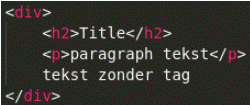
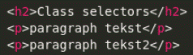

Opdracht 1
Je kunt op 3 verschillende manieren CSS in je HTML inladen. Op welke 3 manieren kun je dat doen? Leg ook voor elke wijze uit wat het precies inhoud.
External CSS: With an external style sheet, you can change the look of an entire website by changing just one file.
Internal CSS: An internal style sheet may be used if one single HTML page has a unique style. The internal style is defined inside the <style> element, inside the head section.
Inline CSS: An inline style may be used to apply a unique style for a single element. To use inline styles, add the style attribute to the relevant element. The style attribute can contain any CSS property.
Source: How to add css (w3schools)
Opdracht 2
CSS pas je toe met een bepaalde syntax. Hoe ziet zo'n syntax eruit? Kun je ook uitleggen wat elk element uit de syntax betekent?
CSS syntax looks as follows:

CSS rules consists of a selector and a declaration block.The selector points to the HTML element you want to style. The declaration block contains one or more declarations separated by semicolons. Each declaration includes a CSS property name and a value, separated by a colon. Multiple CSS declarations are separated with semicolons, and declaration blocks are surrounded by curly braces.
Source: CSS syntax (w3schools)
Opdracht 3
Er zijn verschillende selectors, bijvoorbeeld;
- type selectors
- descendant selectors
- class selectors
Maak van de bovengenoemde selectors voorbeelden. Geef in je antwoord ook aan wat de voordelen zijn van elke selector.
Type selectors: matches elements by node name. It selects all elements of the given type within a document.
Descendant selectors: any selector with white space between two selectors (without a combinator). [Link]
- Child and sibling selectors (with combinators) [Link]
Class selectors: matches elements based on the contents of their class attribute.
Source: CSS Selector Reference (w3schools)
Opdracht 4
Maak een aparte html bestand en voeg de volgende code toe:
Opdracht 5
Maak een aparte html bestand en voeg de volgende code toe:
Opdracht 6
Verder heb je ook nog de volgende selectors:
- child selectors
- adjacent selectors
- general selectors
Maak in een aparte html bestand voor elke selector een voorbeeld en maak een link in je antwoord naar dat html bestand. Geef in je antwoord ook aan wat de voordelen zijn van elk selector.
Opdracht 7
Maak nu een html bestand aan met voorbeelden van alle soorten selectors erin. Maak een link in je antwoord die naar dat html bestand verwijst.
Opdracht 8
Leg in eigen woorden uit wat met cascade en inheritance wordt bedoeld. Maak voorbeelden om je antwoord uit te leggen.
Cascade: Stylesheets cascade — at a very simple level, this means that the order of CSS rules matter; when two rules apply that have equal specificity the one that comes last in the CSS is the one that will be used.
Specificity Specificity is how the browser decides which rule applies if multiple rules have different selectors, but could still apply to the same element. It is basically a measure of how specific a selector's selection will be:
- An element selector is less specific — it will select all elements of that type that appear on a page — so will get a lower score.
- A class selector is more specific — it will select only the elements on a page that have a specific class attribute value — so will get a higher score.
Inheritance: Inheritance also needs to be understood in this context — some CSS property values set on parent elements are inherited by their child elements, and some aren't.